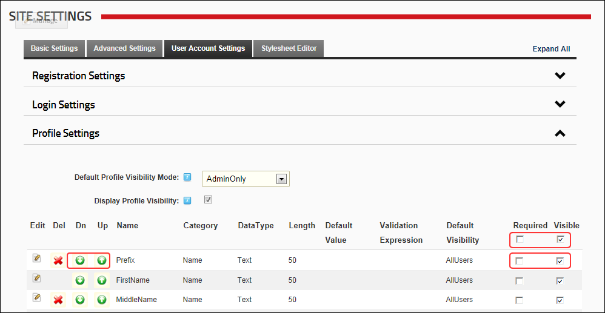

Managing a Profile Field
How to modify the order in which profile fields appear on the user profile page and set who can see each field by default and whether the field is required or optional.
- Navigate to Admin >
 Site Settings.
Site Settings.
- Select the User Account Settings tab.
- Expand the Profile Settings section.
- Optional. Click the Refresh Grid button located at the base of the module if you have been idle on the page for some time and there are two or more Administrators on this site, or a SuperUser has been making updates. This refreshes the grid with any recent changes.
- Click the Down
 button to move a field down one position on the profile page.
button to move a field down one position on the profile page.
- Click the Up
 button to move a field up one position on the profile page.
button to move a field up one position on the profile page.
- In the Required column, perform any of the following to set the fields that are required for a valid profile:
- at the top of this column to set all fields as required - OR - at the top of this column to set all fields as optional.
- beside a field to set it as mandatory on the User's Profile page. The user will be prompted to update this field when they edit their profile. Note: The field will only be required at Registration if set under User Settings (See "Configuring a Custom Registration Form" and See "Configuring the Standard Registration Form") - OR - beside a field to set it as optional.
- At Visible, select from the following options to set the visibility of fields on the Manage Profile page:
- located at the top of this column to set all fields as visible - OR - at the top of this column to hide all fields.
- beside a field to set it as visible - OR - beside a field to set it as not visible.

-
Click the Update button.